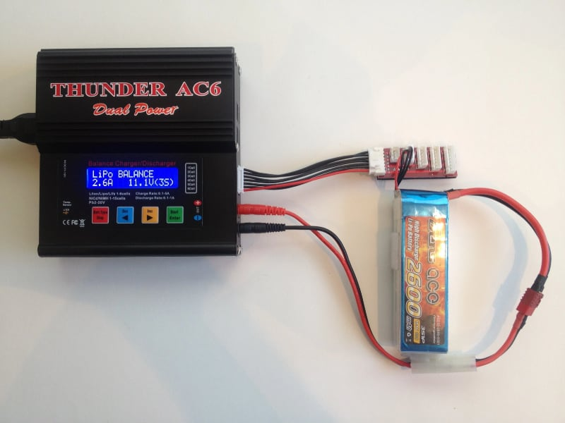
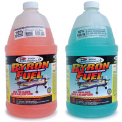
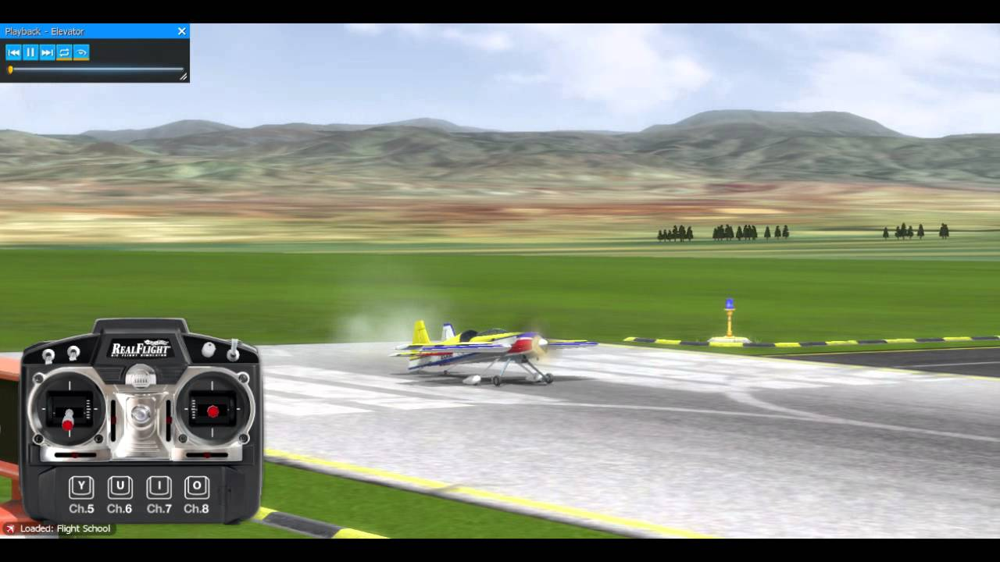

Flying rc models is not a cheap hobby. Before building your first model you will need a few items to get started.
-
Radio Transmitter

- This is the first equipment you would need before buying any other stuff.
- You would use this radio transmitter to control all your models. It should be as high quality as possible.
- You need to buy receiver units compatible to your transmitter.
-
Battery and Battery Charger
- Lipo batteries are used for powering electric powered rc models.
- You would need a few batteries when you go to the flying field.
- Your charger should be able to charge safely without damaging the battery's chemistry.
-
Nitro or Gas Fuel
- Not all models are electric powered. Especially larger models require fuel for their engines.
- RC engines work with nitromethane-alcohol mixture or gas.
- These fuels are highly flamable and poisionous. They should be carefully handled.
-
RC Simulator
- RC simulators that run on very similar to computer games help you develop required skills.
- It is a safe way to practice how model flies and gives you a feeeling before trying the real model.
- You can try risky moves before trying them on your actual model. It helps avoid crashes and saves you money!